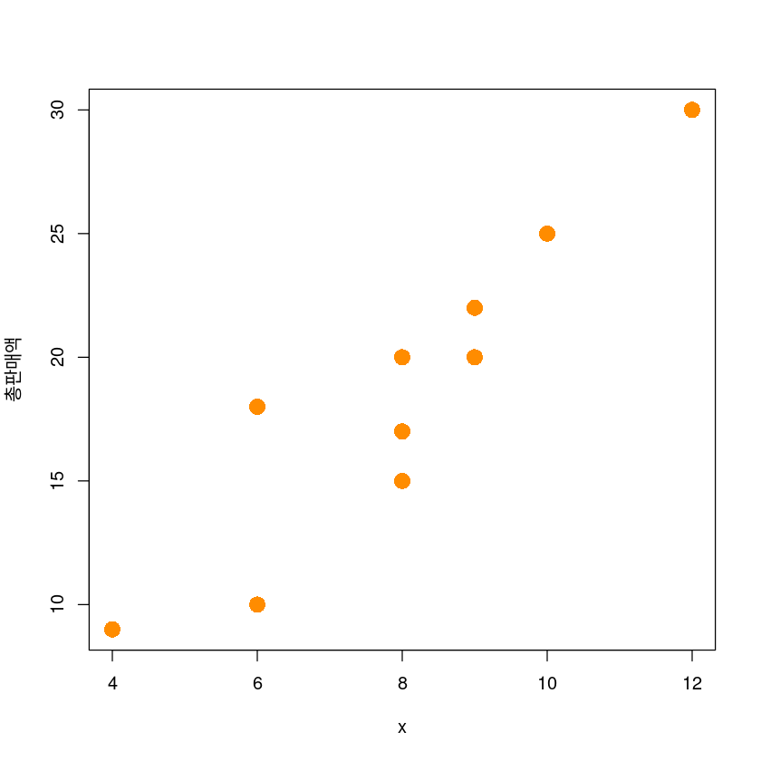
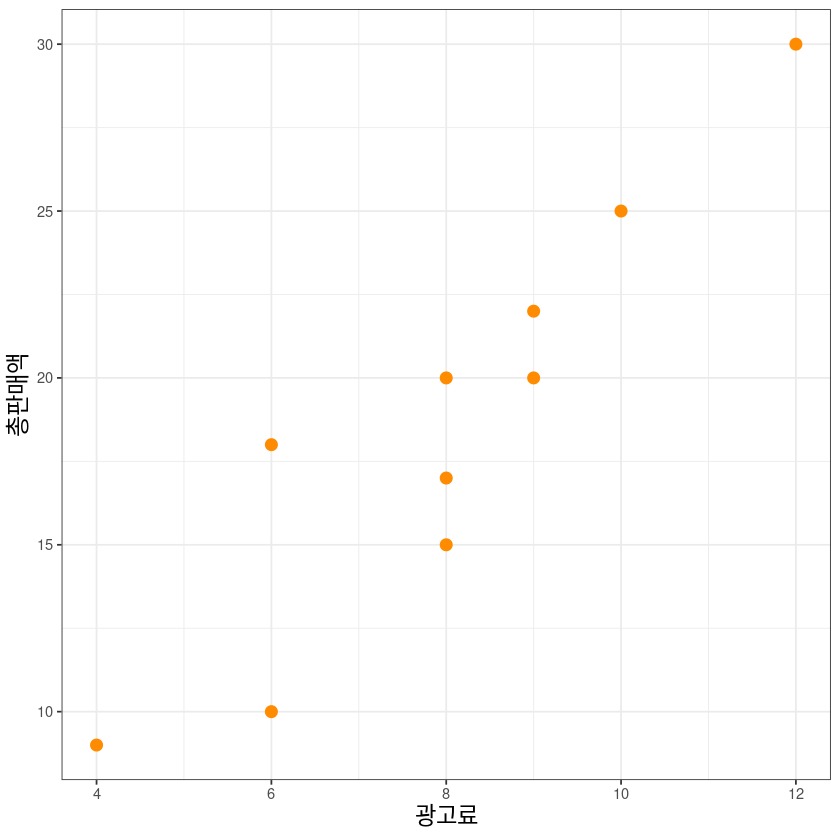
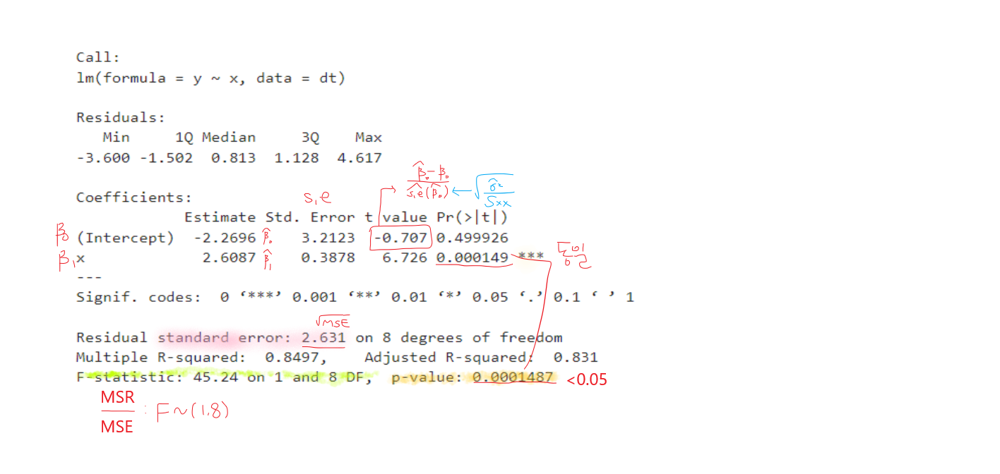
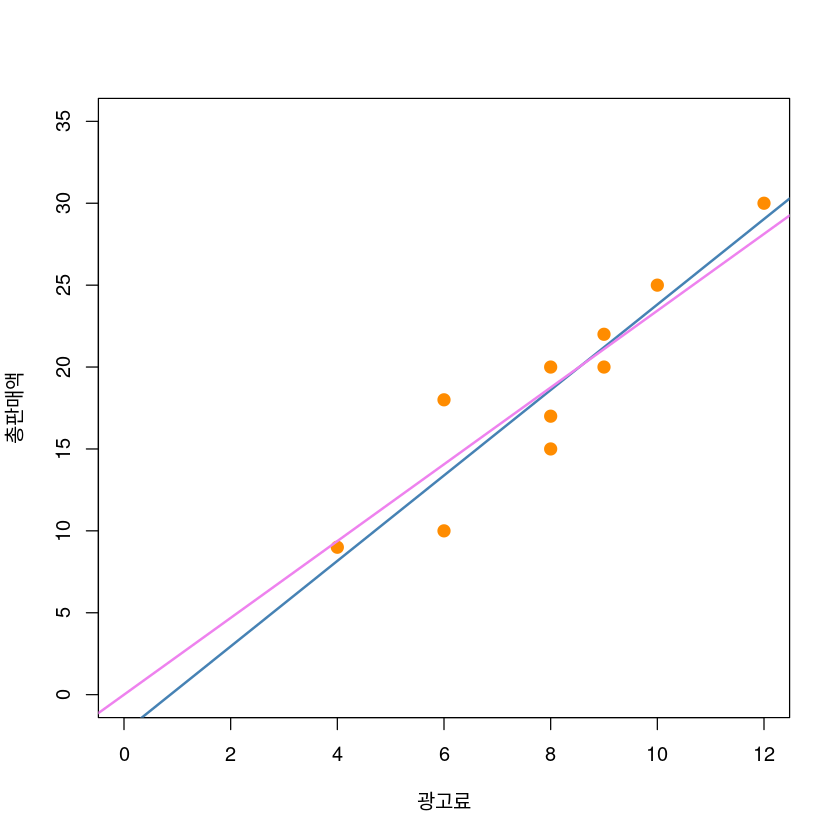
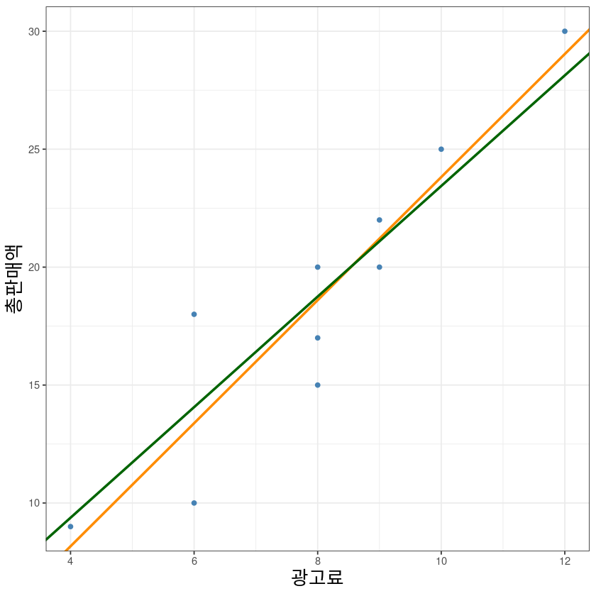
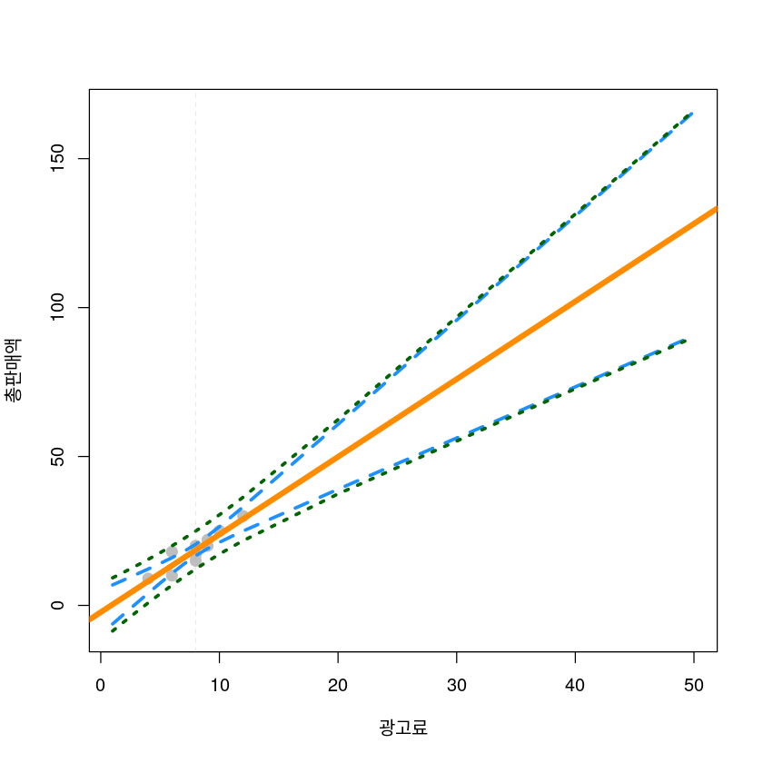
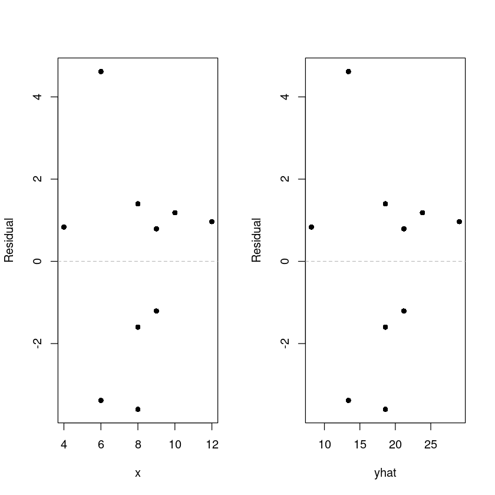

Loading required package: zoo
Attaching package: ‘zoo’
The following objects are masked from ‘package:base’:
as.Date, as.Date.numeric
2. SLR실습
Applied statistics
Simple Linear Regression
해당 자료는 전북대학교 이영미 교수님 2023응용통계학 자료임
단순선형회귀분석
| x | y |
|---|---|
| <dbl> | <dbl> |
| 4 | 9 |
| 8 | 20 |
| 9 | 22 |
| 8 | 15 |
| 8 | 17 |
| 12 | 30 |
| 6 | 18 |
| 10 | 25 |
| 6 | 10 |
| 9 | 20 |
A data.frame: 10 × 2
- 산점도 그리기
Warning message in plot.window(...):
“"lxab" is not a graphical parameter”
Warning message in plot.xy(xy, type, ...):
“"lxab" is not a graphical parameter”
Warning message in axis(side = side, at = at, labels = labels, ...):
“"lxab" is not a graphical parameter”
Warning message in axis(side = side, at = at, labels = labels, ...):
“"lxab" is not a graphical parameter”
Warning message in box(...):
“"lxab" is not a graphical parameter”
Warning message in title(...):
“"lxab" is not a graphical parameter”
ggplot(dt, aes(x, y)) +
geom_point(col='darkorange', size=3) +
xlab("광고료")+ylab("총판매액")+
theme_bw() +
theme(axis.title = element_text(size = 14))
- 단순선형회귀모형 \[y= β_0 + β_1 x + ϵ\]
- 추정된 회귀직선
\[\widehat{y}=\widehat{E(y|X=x)}=\widehat{\beta_0}+\widehat{\beta_1}x\]
- 모형 적합
lm(formula, data)
formula: \(y=f(x)\), \(y\)(반응변수) ~ \(x\)(설명변수)
- 직접계산
\[\widehat{\beta_0} = \bar y - \widehat{\beta_1} + \bar x \]
\[\widehat{\beta_1} = \dfrac{S_{xy}}{S_{xx}}\]
2.60869565217391
Call:
lm(formula = y ~ x, data = dt)
Residuals:
Min 1Q Median 3Q Max
-3.600 -1.502 0.813 1.128 4.617
Coefficients:
Estimate Std. Error t value Pr(>|t|)
(Intercept) -2.2696 3.2123 -0.707 0.499926
x 2.6087 0.3878 6.726 0.000149 ***
---
Signif. codes: 0 ‘***’ 0.001 ‘**’ 0.01 ‘*’ 0.05 ‘.’ 0.1 ‘ ’ 1
Residual standard error: 2.631 on 8 degrees of freedom
Multiple R-squared: 0.8497, Adjusted R-squared: 0.831
F-statistic: 45.24 on 1 and 8 DF, p-value: 0.0001487- summary
제일 먼저 F검정의 p-value값을 확인하자.
\(H_0\): \(\beta_1=0\) vs \(H_1\): not \(H_0\)

- 'coefficients'
- 'residuals'
- 'effects'
- 'rank'
- 'fitted.values'
- 'assign'
- 'qr'
- 'df.residual'
- 'xlevels'
- 'call'
- 'terms'
- 'model'
- 아래 값들은 모두 동일한 값을 리턴한다.
\[\widehat y = \widehat \beta_0 + \widehat \beta_1 x\]
- 1
- 8.16521739130434
- 2
- 18.6
- 3
- 21.2086956521739
- 4
- 18.6
- 5
- 18.6
- 6
- 29.0347826086957
- 7
- 13.3826086956522
- 8
- 23.8173913043478
- 9
- 13.3826086956522
- 10
- 21.2086956521739
- 8.16521739130435
- 18.6
- 21.2086956521739
- 18.6
- 18.6
- 29.0347826086957
- 13.3826086956522
- 23.8173913043478
- 13.3826086956522
- 21.2086956521739
- 1
- 8.16521739130434
- 2
- 18.6
- 3
- 21.2086956521739
- 4
- 18.6
- 5
- 18.6
- 6
- 29.0347826086957
- 7
- 13.3826086956522
- 8
- 23.8173913043478
- 9
- 13.3826086956522
- 10
- 21.2086956521739
- 1
- 8.16521739130434
- 2
- 18.6
- 3
- 21.2086956521739
- 4
- 18.6
- 5
- 18.6
- 6
- 29.0347826086957
- 7
- 13.3826086956522
- 8
- 23.8173913043478
- 9
- 13.3826086956522
- 10
- 21.2086956521739
- 아래 값들은 모두 동일한 값을 리턴한다.
\[e = y- \widehat y\]
- 1
- 0.834782608695656
- 2
- 1.4
- 3
- 0.791304347826087
- 4
- -3.6
- 5
- -1.6
- 6
- 0.96521739130435
- 7
- 4.61739130434782
- 8
- 1.18260869565217
- 9
- -3.38260869565218
- 10
- -1.20869565217391
- 1
- 0.834782608695656
- 2
- 1.4
- 3
- 0.791304347826088
- 4
- -3.6
- 5
- -1.6
- 6
- 0.96521739130435
- 7
- 4.61739130434782
- 8
- 1.18260869565217
- 9
- -3.38260869565218
- 10
- -1.20869565217391
- 1
- 0.834782608695656
- 2
- 1.4
- 3
- 0.791304347826087
- 4
- -3.6
- 5
- -1.6
- 6
- 0.96521739130435
- 7
- 4.61739130434782
- 8
- 1.18260869565217
- 9
- -3.38260869565218
- 10
- -1.20869565217391
회귀모형의 유의성 검정, 분산분석표(ANOVA)
| Df | Sum Sq | Mean Sq | F value | Pr(>F) | |
|---|---|---|---|---|---|
| <int> | <dbl> | <dbl> | <dbl> | <dbl> | |
| x | 1 | 313.04348 | 313.043478 | 45.24034 | 0.0001486582 |
| Residuals | 8 | 55.35652 | 6.919565 | NA | NA |
A anova: 2 × 5
- 'adj.r.squared'
- 'aliased'
- 'call'
- 'coefficients'
- 'cov.unscaled'
- 'df'
- 'fstatistic'
- 'r.squared'
- 'residuals'
- 'sigma'
- 'terms'
| Estimate | Std. Error | t value | Pr(>|t|) | |
|---|---|---|---|---|
| (Intercept) | -2.269565 | 3.212348 | -0.7065129 | 0.4999255886 |
| x | 2.608696 | 0.387847 | 6.7260939 | 0.0001486582 |
A matrix: 2 × 4 of type dbl
회귀계수의 신뢰구간
| 2.5 % | 97.5 % | |
|---|---|---|
| (Intercept) | -9.677252 | 5.138122 |
| x | 1.714319 | 3.503073 |
A matrix: 2 × 2 of type dbl
\[\widehat \beta \pm t_{\alpha/2}(n-2) s.e(\widehat \beta)\]
절편이 없는 회귀모형
\[y=\beta_1 x + \epsilon\]
Call:
lm(formula = y ~ 0 + x, data = dt)
Residuals:
Min 1Q Median 3Q Max
-4.0641 -1.5882 0.2638 1.4818 3.9359
Coefficients:
Estimate Std. Error t value Pr(>|t|)
x 2.3440 0.0976 24.02 1.8e-09 ***
---
Signif. codes: 0 ‘***’ 0.001 ‘**’ 0.01 ‘*’ 0.05 ‘.’ 0.1 ‘ ’ 1
Residual standard error: 2.556 on 9 degrees of freedom
Multiple R-squared: 0.9846, Adjusted R-squared: 0.9829
F-statistic: 576.8 on 1 and 9 DF, p-value: 1.798e-09- 절편이 없는 회귀모형의 R스퀘어가 더 크므로 model2가 더 좋은 것 같다.
LSE
| i | x | y | x_barx | y_bary | x_barx2 | y_bary2 | xy |
|---|---|---|---|---|---|---|---|
| <int> | <dbl> | <dbl> | <dbl> | <dbl> | <dbl> | <dbl> | <dbl> |
| 1 | 4 | 9 | -4 | -9.6 | 16 | 92.16 | 38.4 |
| 2 | 8 | 20 | 0 | 1.4 | 0 | 1.96 | 0.0 |
| 3 | 9 | 22 | 1 | 3.4 | 1 | 11.56 | 3.4 |
| 4 | 8 | 15 | 0 | -3.6 | 0 | 12.96 | 0.0 |
| 5 | 8 | 17 | 0 | -1.6 | 0 | 2.56 | 0.0 |
| 6 | 12 | 30 | 4 | 11.4 | 16 | 129.96 | 45.6 |
| 7 | 6 | 18 | -2 | -0.6 | 4 | 0.36 | 1.2 |
| 8 | 10 | 25 | 2 | 6.4 | 4 | 40.96 | 12.8 |
| 9 | 6 | 10 | -2 | -8.6 | 4 | 73.96 | 17.2 |
| 10 | 9 | 20 | 1 | 1.4 | 1 | 1.96 | 1.4 |
A data.frame: 10 × 8
- 직접계산
\[\widehat{\beta_0} = \bar y - \widehat{\beta_1} + \bar x \]
\[\widehat{\beta_1} = \dfrac{S_{xy}}{S_{xx}}\]
그림
plot(y~x, data = dt,
xlab = "광고료",
ylab = "총판매액",
pch = 20,
cex = 2,
col = "darkorange",
ylim = c(0,35),
xlim = c(0, 12))
abline(model1, col='steelblue', lwd=2)
abline(model2, col='violet', lwd=2)
ggplot(dt, aes(x, y)) +
geom_point(col='steelblue', lwd=3) +
geom_abline(intercept = co[1], slope = co[2], col='darkorange', lwd=1) +
geom_abline(intercept = 0, slope = co_2, col='darkgreen', lwd=1) +
xlab("광고료")+ylab("총판매액")+
theme_bw()+
theme(axis.title = element_text(size = 16))Warning message in geom_point(col = "steelblue", lwd = 3):
“Ignoring unknown parameters: `linewidth`”
신뢰대
평균반응, 개별y 추정
\[E(Y|x_0)\]
\[y=E(Y|x_0)+\epsilon\]
- \(x_0\)=4.5
\[\widehat \mu_0 = \widehat y_0 = \widehat \beta_0 + \widehat \beta_1 4.5\]
| fit | lwr | upr | |
|---|---|---|---|
| 1 | 9.469565 | 5.79826 | 13.14087 |
A matrix: 1 × 3 of type dbl
| fit | lwr | upr | |
|---|---|---|---|
| 1 | 9.469565 | 2.379125 | 16.56001 |
A matrix: 1 × 3 of type dbl
dt_pred <- data.frame(
x = c(1:12, 20, 35, 50),
predict(model1,
newdata=data.frame(x=c(1:12, 20, 35, 50)),
interval="confidence", level = 0.95),
predict(model1,
newdata=data.frame(x=c(1:12, 20, 35, 50)),
interval="prediction", level = 0.95)[,-1])
dt_pred| x | fit | lwr | upr | lwr.1 | upr.1 | |
|---|---|---|---|---|---|---|
| <dbl> | <dbl> | <dbl> | <dbl> | <dbl> | <dbl> | |
| 1 | 1 | 0.3391304 | -6.2087835 | 6.887044 | -8.5867330 | 9.264994 |
| 2 | 2 | 2.9478261 | -2.7509762 | 8.646628 | -5.3751666 | 11.270819 |
| 3 | 3 | 5.5565217 | 0.6905854 | 10.422458 | -2.2199297 | 13.332973 |
| 4 | 4 | 8.1652174 | 4.1058891 | 12.224546 | 0.8663128 | 15.464122 |
| 5 | 5 | 10.7739130 | 7.4756140 | 14.072212 | 3.8692308 | 17.678595 |
| 6 | 6 | 13.3826087 | 10.7597808 | 16.005437 | 6.7738957 | 19.991322 |
| 7 | 7 | 15.9913043 | 13.8748223 | 18.107786 | 9.5667143 | 22.415894 |
| 8 | 8 | 18.6000000 | 16.6817753 | 20.518225 | 12.2379683 | 24.962032 |
| 9 | 9 | 21.2086957 | 19.0922136 | 23.325178 | 14.7841056 | 27.633286 |
| 10 | 10 | 23.8173913 | 21.1945634 | 26.440219 | 17.2086783 | 30.426104 |
| 11 | 11 | 26.4260870 | 23.1277880 | 29.724386 | 19.5214047 | 33.330769 |
| 12 | 12 | 29.0347826 | 24.9754543 | 33.094111 | 21.7358781 | 36.333687 |
| 13 | 20 | 49.9043478 | 39.0017505 | 60.806945 | 37.4278703 | 62.380825 |
| 14 | 35 | 89.0347826 | 64.8105387 | 113.259027 | 64.0626010 | 114.006964 |
| 15 | 50 | 128.1652174 | 90.5524421 | 165.777993 | 90.0664414 | 166.263993 |
A data.frame: 15 × 6
| x | fit | lwr | upr | plwr | pupr | |
|---|---|---|---|---|---|---|
| <dbl> | <dbl> | <dbl> | <dbl> | <dbl> | <dbl> | |
| 1 | 1 | 0.3391304 | -6.2087835 | 6.887044 | -8.5867330 | 9.264994 |
| 2 | 2 | 2.9478261 | -2.7509762 | 8.646628 | -5.3751666 | 11.270819 |
| 3 | 3 | 5.5565217 | 0.6905854 | 10.422458 | -2.2199297 | 13.332973 |
| 4 | 4 | 8.1652174 | 4.1058891 | 12.224546 | 0.8663128 | 15.464122 |
| 5 | 5 | 10.7739130 | 7.4756140 | 14.072212 | 3.8692308 | 17.678595 |
| 6 | 6 | 13.3826087 | 10.7597808 | 16.005437 | 6.7738957 | 19.991322 |
| 7 | 7 | 15.9913043 | 13.8748223 | 18.107786 | 9.5667143 | 22.415894 |
| 8 | 8 | 18.6000000 | 16.6817753 | 20.518225 | 12.2379683 | 24.962032 |
| 9 | 9 | 21.2086957 | 19.0922136 | 23.325178 | 14.7841056 | 27.633286 |
| 10 | 10 | 23.8173913 | 21.1945634 | 26.440219 | 17.2086783 | 30.426104 |
| 11 | 11 | 26.4260870 | 23.1277880 | 29.724386 | 19.5214047 | 33.330769 |
| 12 | 12 | 29.0347826 | 24.9754543 | 33.094111 | 21.7358781 | 36.333687 |
| 13 | 20 | 49.9043478 | 39.0017505 | 60.806945 | 37.4278703 | 62.380825 |
| 14 | 35 | 89.0347826 | 64.8105387 | 113.259027 | 64.0626010 | 114.006964 |
| 15 | 50 | 128.1652174 | 90.5524421 | 165.777993 | 90.0664414 | 166.263993 |
A data.frame: 15 × 6
신뢰대2
plot(y~x, data = dt,
xlab = "광고료",
ylab = "총판매액",
ylim = c(min(dt_pred$plwr), max(dt_pred$pupr)),
xlim = c(1,50),
pch = 20,
cex = 2,
col = "grey"
)
abline(model1, lwd = 5, col = "darkorange")
lines(dt_pred$x, dt_pred$lwr, col = "dodgerblue", lwd = 3, lty = 2)
lines(dt_pred$x, dt_pred$upr, col = "dodgerblue", lwd = 3, lty = 2)
lines(dt_pred$x, dt_pred$plwr, col = "darkgreen", lwd = 3, lty = 3)
lines(dt_pred$x, dt_pred$pupr, col = "darkgreen", lwd = 3, lty = 3)
abline(v=barx, lty=2, lwd=0.2, col='dark grey')
잔차분석
- \(\epsilon\) : 선형성, 등분산성, 정규성, 독립성
par(mfrow=c(1,2))
plot(resid ~ x, dt, pch=16, ylab = 'Residual')
abline(h=0, lty=2, col='grey')
plot(resid ~ yhat, dt, pch=16, ylab = 'Residual')
abline(h=0, lty=2, col='grey')
par(mfrow=c(1,1))
등분산성
- \(H_0\):등분산 vs \(H_1\):이분산 (Heteroscedesticity)
잔차의 QQ plot
Shapiro-Wilk Test
- \(H_0\):normal distribution vs \(H_1\): not \(H_0\)
독립성검정: DW test
Durbin-Watson test
data: model1
DW = 1.4679, p-value = 0.3916
alternative hypothesis: true autocorrelation is not 0
Durbin-Watson test
data: model1
DW = 1.4679, p-value = 0.1958
alternative hypothesis: true autocorrelation is greater than 0